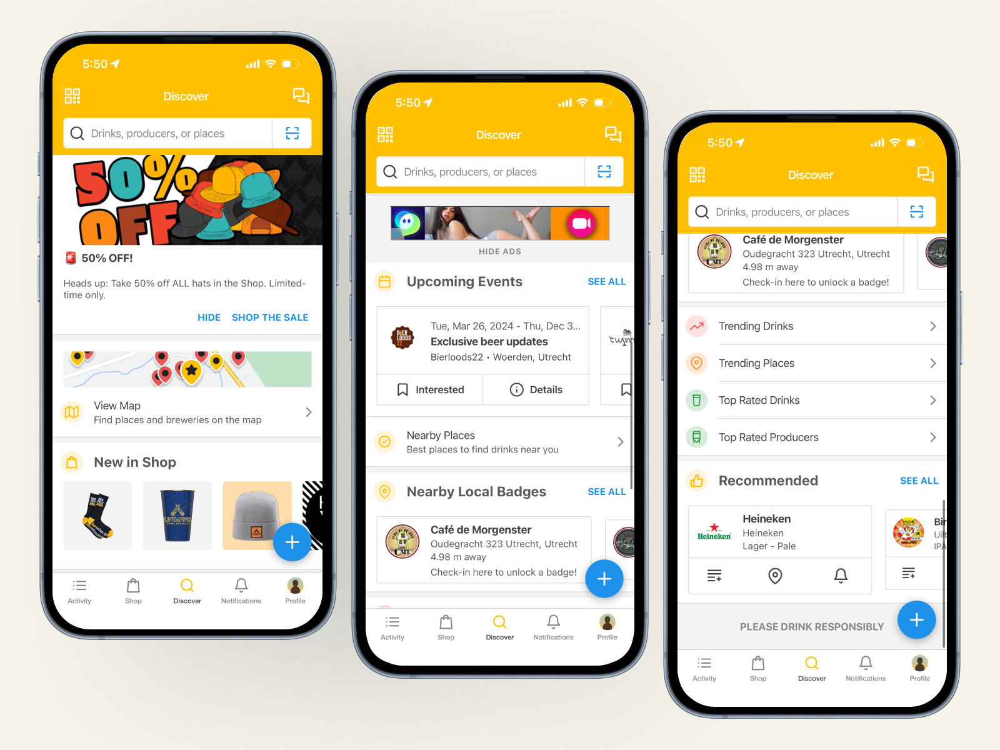
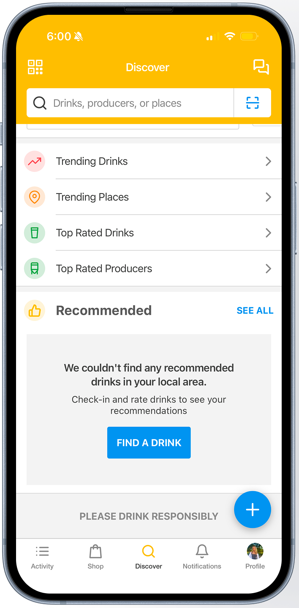
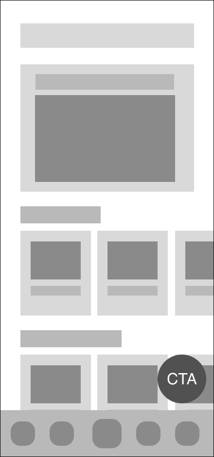
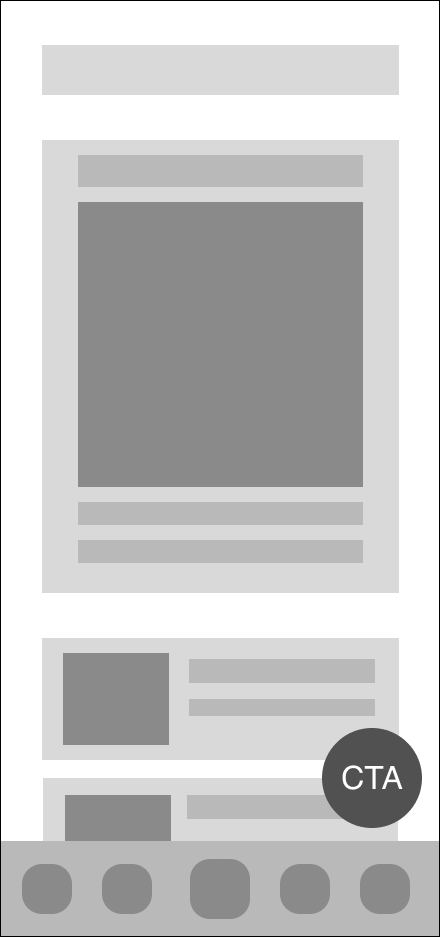
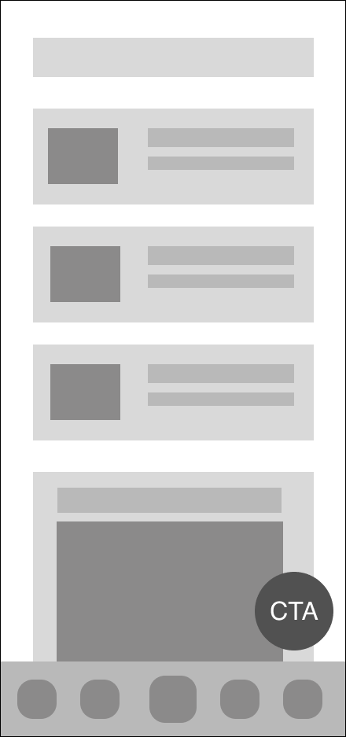
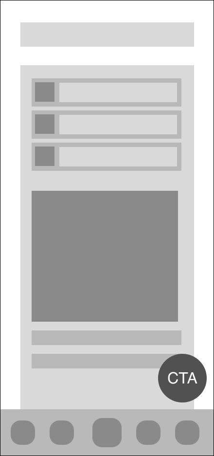
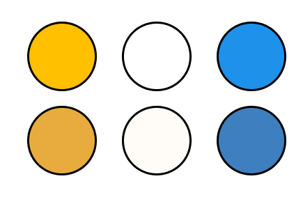
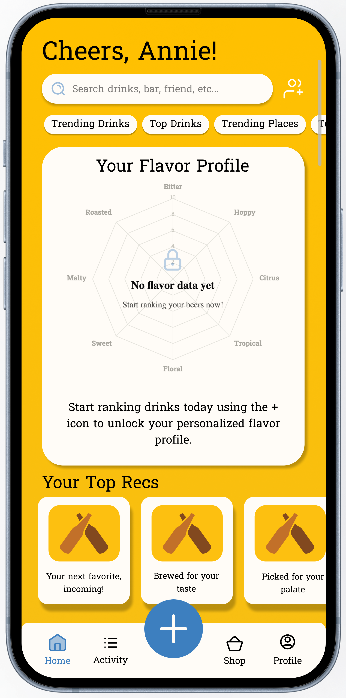
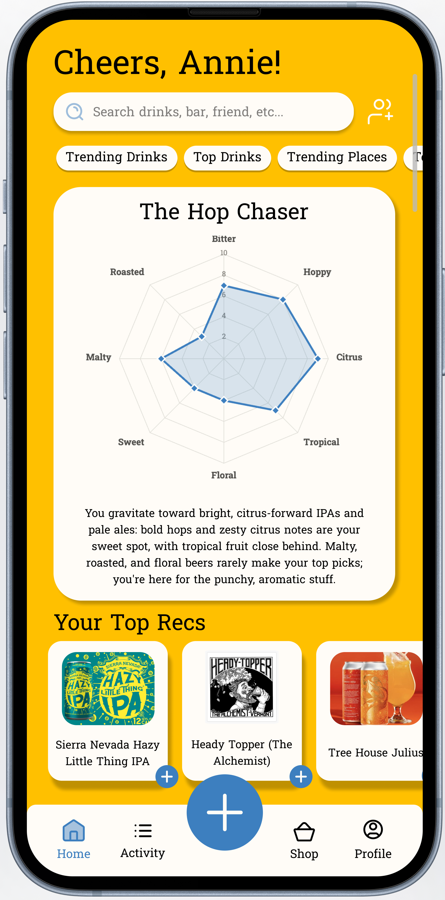
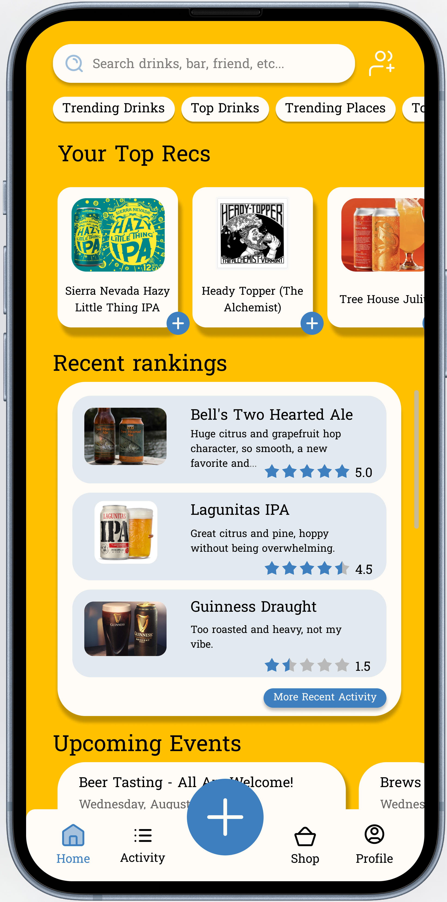

( 01 / My Work: Case Study )
A ground-up redesign of Untappd's main Discover page, turning a cluttered, ad-heavy home screen into a cleaner experience built around the features people actually open the app for.
( 02 / Overview )
After developing an interest in UX/UI design, I started noticing the design decisions behind every app, post, and platform I use, and each one became an informal user test of its own. That habit led me to Untappd, an app for discovering and ranking beers. Its core concept is strong, but friends who used it regularly complained about the interface, the workflows, and the overall experience. So I downloaded it, ran my own tests, and set out to redesign its main Discover page.
( 03 / User Research )
To find where the real pain points were, I pulled qualitative data from Untappd-related Reddit discussions, read through App Store reviews, and interviewed friends who use the app regularly.
What the feedback revealed:
To figure out how the new page should be laid out, I first needed to understand what value people actually get from the app. Combining my research with the app's stated purpose, I landed on three core goals of use:
In users' own words:
"I use it to give me a rough idea on how much i might like the beer by it's rating."
"I stopped using it to rate beers ages ago, but it's helpful to find specific beers."
"By using Untappd. I can see what people are actual drinking at the pubs"
"I love being able to select flavor profiles based on my personal interpretation, and tagging locations makes it a fun way to look back at my journeys through beer."
Because Untappd is a community-driven platform, engagement feeds itself in a loop: the more people rank drinks, the more useful the app becomes for everyone.
( 04 / The Problems )

Untappd's current Discover page.
The current experience flows through the page roughly like this:
The main layout crams in a lot of different parts, including ads, a map, items for sale, events, badges, recommendations, and trending lists, all organized in a way that overwhelms the user. Hard black lines between sections break up the flow and make it feel disjointed. On top of that, the UI feels outdated, which makes the experience frustrating and makes the product feel unvalued, as if the team hasn't invested in a more modern, pleasant interface.
The layout doesn't encourage the kind of engagement the app depends on. Recommendations and trending beverages (arguably the main draw of the app) are pushed to the very bottom of the screen instead of being the focus. Even the call-to-action to start ranking drinks, which is critical for a first-time user, sits at the bottom of the page.
"Only to track what I've tried. I don't rate beers, just record them."

The call-to-action to start ranking only appears after scrolling past ads, a map, events, and badges.
"[I] realize ads are a way to fund growth, but the types of ads and frequency of them are annoying and sometimes disturbing ... .You've abandoned what used to be fun about this app, which was a way to connect with breweries and other beer lovers."
( 05 / The Solution )
( 06 / Guiding Principles )
Users spend most of their time on other apps, so they carry those expectations with them. Placing familiar elements (search bar, navigation menu) where users expect them reduces cognitive load and keeps the interface intuitive.
Modules should be clean, symmetrical, and organized so users can navigate the app with minimal effort.
A simpler, more modern UI increases user trust and makes the app feel more professional.
The more choices a user is presented with, the longer it takes them to decide. Limiting on-screen options at any given time speeds up decision-making and keeps the interface feeling simple rather than overwhelming.
( 07 / Ideation )
Using these guiding principles and solutions, I drafted several wireframes. Each one includes a call-to-action button to add a drink ranking and a navigation bar positioned within the thumb zone for easy access.

ProsStrong visual hierarchy, a grid-scroll format that supports more information, and cropped content that encourages scrolling.
ConsMore visually crowded than the others; more options could raise cognitive load.

ProsA dominant focal point, an inviting main screen, and a simple layout.
ConsFits less information overall, since the main hero takes up most of the screen.

ProsBalanced, consistent design with uniform rows that allow multiple highlights.
ConsMultiple focal points can feel less inviting on open, and the larger section reads like an afterthought below the list rows.

ProsOne unified section.
ConsFunctions aren't visually separated, which could cause confusion and doesn't visually invite scrolling.
I ultimately based my final design on a mix of Wireframe 1 and 2, combining a strong, welcoming focal point with enough surfaced information to encourage scrolling and engagement.
( 08 / My Final Design )
In my final design, I updated Untappd's Discover/home page UX and UI to create an easier, more enjoyable experience.
General choices, and why

I moved to a more neutral base palette and rebranded the accent colors to a subtler, more professional gold and blue. This keeps the colors needed for brand recognition, but trades a chaotic, bright interface for a calmer one.
I changed the base font from Helvetica to Hanuman, a softer typeface that helps the app feel more welcoming, approachable, and casual.

For new users, I designed an obvious call-to-action right on the main page as soon as the app opens. It prompts users to start ranking drinks to "unlock" their taste preferences, gamifying the action while surfacing the educational value of ranking. Recommendation cards start empty, too, giving users another reason to engage before they see any payoff.
I removed buttons (like messaging) that pointed to features that are no longer active, so users never land on a dysfunctional page.
The Redesigned Layout
A "Cheers, [Name]!" banner welcomes the user, then scrolls away into a search bar pinned to the top for easy access.
Pinned shortcut buttons for trending drinks, top drinks, trending places, and top places stay accessible no matter how far the user scrolls.

A vertical scroll indicator gives users feedback on where they are on the page.
The user's taste profile opens the page and sharpens with every ranking, fueling both taste education and friendly comparison with friends.
Recent rankings show rating, notes, and a beer photo (or the user's own), with a button to pull up older history.
Upcoming events list time, location, and other details so users can judge whether to attend.

Top recommendation cards are clickable, each with a call-to-action to rank the beverage right on the spot.
The nav bar centers the ranking CTA (+) and highlights the current tab in blue: Home, Shop, Activity, Profile.
Together, these changes turn the Discover page from something users tolerated into something built to be used. Familiar patterns, like a search bar and navigation exactly where people already expect them, keep the interface intuitive, while fewer on-screen choices at any one time make the primary actions easy to find and act on quickly. Every interactive element reinforces that: shadows on the recommendation cards invite a tap for more detail, and their blue call-to-action buttons let users rank a beverage on the spot. The flavor-profile card and personalized recommendations give ranking real, ongoing payoff, turning taste-preference education into the app's main draw rather than an afterthought. Paired with consistent feedback at every step and a simpler, more modern UI, the result is a page users can trust, and one they'll actually want to open.
( 09 / The Impact )
Effects of the improved UI:
To measure that impact, I gathered qualitative feedback alongside quantitative ratings on both designs across five areas: organization, professionalism, trustworthiness, welcoming feel, and ease of navigation.
Rated increase, original vs. redesign
What users said
What worked: Users liked the thematic sections, the bottom navigation bar, the accessible search bar and official beer logos, and the app's playful, colorful identity.
What didn't: That same energy tipped into clutter for most. Oversized ads, vague categories, heavy stock imagery, and misplaced priorities left the app feeling disorganized and visually overwhelming, and a few users flagged poor contrast in the lower sections.
What worked: Personalization stood out most, especially the flavor-profile graph and tailored recommendations, alongside the calmer colorway, clearer organization, and improved readability. Several users called out the centered "+" nav button and the black-on-yellow contrast specifically.
What didn't: Feedback was noticeably lighter here and mostly requests for more functionality, like a map feature and a larger search bar, rather than fixes, plus one note that the yellow tone could be adjusted.
( 10 / Takeaways )
( 11 / Opportunities for Continued Improvement )
Some ideas or features that could be added after further research:
Ways to educate users on how beer is made and the different styles that exist, in hopes it could better inform their ordering decisions.
The badge feature tries to gamify the app, but users find it more annoying than motivating. It could be replaced with a simple streak on a profile, or friendly competitions between friends.
The message feature has been retired, but its icon still appears in the app. Tapping it just explains that messaging is no longer active. I'd recommend removing it entirely to avoid unnecessary friction.
Add Light and Dark Mode appearance options, giving users more control over their experience.
Use consistent, beer-specific language throughout. Some parts of the app say "breweries," others say "producers." Standardizing on "breweries" would make the terminology easier to recognize and search for.
( 12 / Limitations )
( 13 / Sources )
Sources for the quotes and user research referenced throughout this case study: